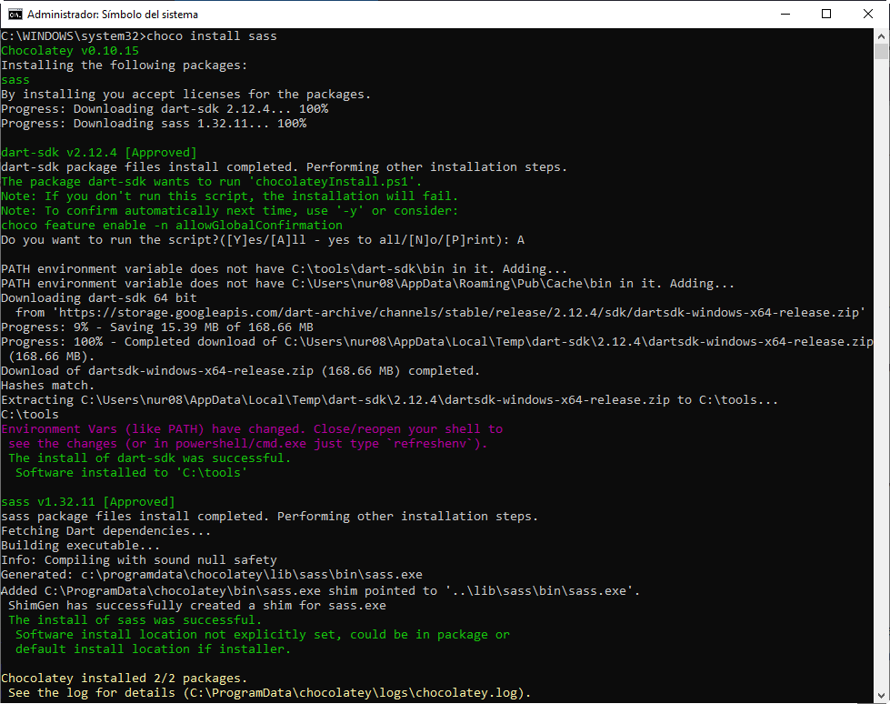
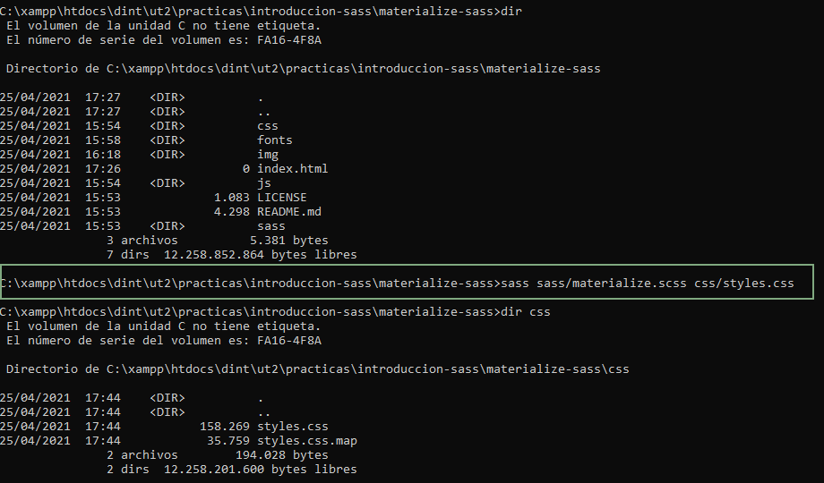

Práctica: Introducción a Sass
Instalación del compilador de Sass en el sistema y uso del preprocesador de CSS con Materialize.
Instalación Sass
Saas se puede instalar a través de:
- aplicaciones, como Scout-App (gratuita, Código abierto ), evitando así la línea de comandos;
- gestores de paquetes, como npm (Node.js), Chocolatey o Homebrew;
- descargando el paquete para tu sistema operativo desde PATH. Evitando instalar aplicaciones y dependencias externas.
Instalación en Windows con Chocolatey
Se puede instalar Dart Sass mediante el gestor de paquetes Chocolatey en Windows corriendo:
choco install sass

Ejecución Sass
Se puede comprobar que Sass se ha instalado correctamente ejecutando sass --version. Si es
correcta, mostrará por pantalla 1.32.11.
Para más información sobre la interfaz por línea de comandos utilizar sass --help.
Una vez instalado correctamente, Sass será capaz de compilar archivos .sass y .scss a .css files. Por ejemplo:
sass source/stylesheets/index.scss build/stylesheets/index.css

Para compilar los archivos a una versión comprimida de css se utiliza la opción
--style compressed:
Nota: la version actual de Sass (1.32.11) solo acepta los formatos de salida expand (por defecto) y compressed. Ya no incluye nested.
Si el archivo css va a tener el mismo nombre que el archivo de sass se puede utilizar la orden acortada carpeta_origen:carpeta_destino:
Cada vez que se quiera recompilar el css habrá que ejecutar una de las órdenes anteriores. Para que se haga
automáticamente al realizar cambios en el archivo de Sass se pone el archivo en "vigilancia" con la opción
--watch o -w: